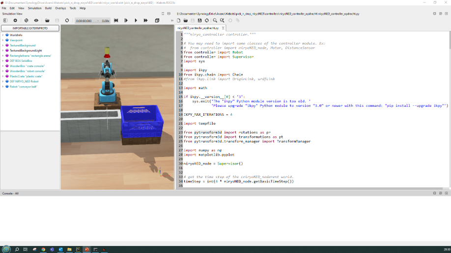
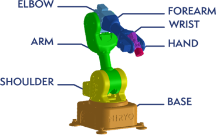

Opdracht 2: Kinematics met Manipulatoren
In deze workshop zul je doormiddel van een robot simulatie met ervaring opdoen met:
Transfeur-frames
Inverse-kinematica
Deze workshop ondersteund de theorie die je geleerd hebt in de lesstof van Introduction in Robotics Kinematica
Doelstellingen
Begrijpen en toepassen van transfeur-frames
Implementeren van inverse-kinematica voor een robotarm
Programmeren van een robotcontroller in Python
Simuleren van een robotarm die objecten oppakt en verplaatst
Voorbereidingen
Neem de volledige voorbereiding door voordat je begint met de opdracht.
Starten en openen Webots-project
Start het Webots programma
Open het “niryo_world.wbt” project uit het gedownloade project bestand.
Open aan de linkerzijde van het project het niryoNed_controller_opdracht.py bestand.

Testen werking van het programma
Klik op de “Play” knop in Webots om de simulatie te starten.
Je zult zien dat er een blokje door de transportband naar de robot wordt aangevoerd
Iedere keer dat je start zal het blokje op een andere positie stoppen
Wel even de rewind knop gebruiken
Notitie
In de console van webots zul je een aantal waarschuwingen zien, deze kunnen genegeerd worden.
Voorbeeld van een waarschuwing:
WARNING: DEF NIRYO_NED Robot > HingeJoint "shoulder_link" > Solid "shoulder_link" > HingeJoint "arm_link" > Solid "arm_link" > HingeJoint "elbow_link" > Solid "elbow_link" > HingeJoint "forearm_link" > Solid "forearm_link" > HingeJoint "wrist_link" > RotationalMotor "joint_5": too low requested position: -1.5708 < -1.5
Opdracht 2.1
Maak het programma van de NiryoNED-robot-controller compleet:
Pak het blokje van de lopende band met de robot en drop het in het krat naast de robot.
Voor je eigen code in op de plaats waar “# Plaats hier je eigen states” staat (nabij regel 250
Hieronder is gegeven de plaats waar je je eigen states kunt toevoegen.
# pick and drop state definition
# Alle toestanden(states) kunnen meerder functies hebben b.v. Entry, Do, Exit functie. Deze worden in 1 regel als List gedefineerd
# Elke Functie dient ten minste een isReady als result te hebben, welke aangeeft dat de volgende functei/toestand aan de beurt is
pick_n_drop_states = [['isReady = niryo.setJoints(niryo.homePos)', 'isReady = niryo.setGripper(niryo.gripperClose)', 'isReady = niryo.isReady()'], # Goto to Home position
['isReady = timer.start(3)', 'isReady = timer.isReady()'], # wacht 3 seconden
# Plaats hier je eigen states
['isReady = niryo.setJoints(dropPos)', 'isReady = niryo.isReady()'], # Ga naar de drop positie
# Plaats hier je eigen states
['isReady = timer.start(3)', 'isReady = timer.isReady()']] # Wacht 3 seconden
Tip
Hier zijn enkele tips om je op weg te helpen:
Je kunt de functies gebruiken die verderop in dit document zijn beschreven
Andere functies heb je niet nodig. Inverse-kinematica en transforms zijn al goed voor geconfigureerd
Je hoeft alleen maar code aan te passen op de plaatsen waar # Plaats hier je eigen states staat (kunnen meerdere regels zijn).
Werk nauwkeurig bij het programmeren, let op de volgorde van volgende leestekens:
,
( of )
[ of ]
Zorg dat je programmeer-code op de juiste manier is ingespongen
Volg de TODO stappen in het programma
De volgende offsets zijn beschikbaar voor gebruik bij het grijpen van objecten:
niryo.grasp_offset
niryo.post_grasp_offset
niryo.pre_grasp_offset
niryo.grasp_offset = [0, 0, 0.04]
niryo.post_grasp_offset = [0, 0, 0.1]
niryo.pre_grasp_offset = [0, 0, 0.1]
Maak een filmpje van het resultaat en lever dit in op Brightspace aan het einde van de les. Ook doen als het nog niet geheel correct werkt!
Beschrijving van gebruikte Pythone Types
De volgende Types worden gebruikt in het programma:
translation-position-type
[x, y, z]
In meters
translation-rotation-type (euler)
[roll, pitch, yaw]
In radialen
joints-type
[shoulder, arm, elbow, forarm, wrist, hand]
In radialen
Let op “base” doet niet mee

Beschrijving van Python functies
De volgende Python functies worden gebruikt in het programma:
niryo.setJoints()
Doel: Beweegt de joints van de robot-arm naar de ingestelde joints-waardes
isReady = niryo.setJoints(joints)
Parameters:
joints: joints-type
Returns
isReady: bool
Wachten op klaar:
isReady = niryo.isReady()
Parameters:
geen
Returns:
isReady: bool
getObjectTranslationFromCamera()
Doel: Neemt een foto met de camera en berekend de translatie van het object dat door de camera gezien.
Notitie
Translation is t.o.v. niryoNED-robot-base
isReady, translation_position, translation_rotation = getObjectTranslationFromCamera()
Parameters:
Geen
Returns:
translation_rotation:
translation-rotation-type
translation_position:
translation-position-type isReady: bool(altijd True)
Wachten op klaar:
Niet nodig
isReady = True
niryo.getJoints()
Doel: Geeft de waardes van de huidige joints van de robot arm terug.
isReady, initial_joints = niryo.getJoints()
Parameters:
Geen
Returns:
initial_joints: joints-type
isReady: bool (altijd True)
Wachten op klaar:
Niet nodig
isReady = True
kinematics_solver.get()
Doel: Berekend de joint-waardes voor de niryoNED-robot.
Notitie
De translation dient t.o.v. de niryoNED-robot-base te zijn.
isReady, joint_values = kinematics_solver.get(translation_position, translation_rotation, initial_joints, grasp_offset)
Parameters:
translation_position:
translation-position-type
translation_rotation:
translation-rotation-type
initial_joints:
joints-type
grasp_offset:
translation-position-type
Returns:
joint_values:
joints-type
isReady:
bool (altijd True)
Wachten op klaar:
Niet nodig
isReady = True
niryo.setGripper()
Doel: Openen en sluiten gripper
isReady = niryo.setGripper(state)
Parameters:
state:
niryo.gripperOpen
niryo.gripperClose
Returns:
isReady: bool
niryo.isReady()
Doel: Controleert of de robot klaar is voor de volgende actie.
isReady = niryo.isReady()
Parameters:
geen
Returns:
isReady: bool
True: Klaar voor de volgende actie
False: Niet klaar voor de volgende actie
Ideale drop-position
De ideale drop-position is de positie waar het object door de robot in de bak kan worden gedoponeerd.
dropPos = [math.pi/4, math.pi/4, -math.pi/4, 0.0, -math.pi/2, 0.0, 0.0, 0.0]
isReady = niryo.setJoints(dropPos)